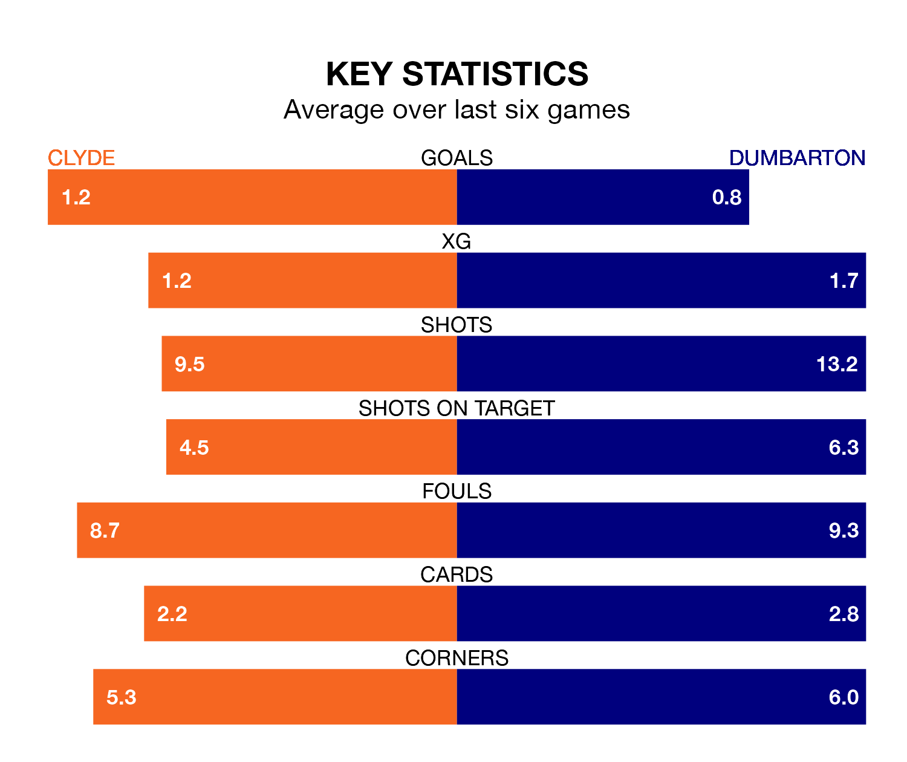

Mid-season relegation candidates Clyde face a challenge against high-flying Dumbarton at the Fountain of Youth Stadium on Saturday.
Clyde are rooted to the bottom of the League Two table, and have picked up just two wins and nine draws in their 23 games to date.
The Sons, meanwhile, are fourth in the standings with 36 points, having won 10 and drawn six, and are 20 points behind table-toppers Stenhousemuir.
With 37 goals in 23 games so far this season, Dumbarton are the league's third-highest scorers with 1.6 goals per game. And they are conceding fewer than average, letting in 27 goals at a rate of 1.2 per game.
Clyde, meanwhile, are below average scorers, with 1.1 goals per game, compared to a league average of 1.3. They have conceded 1.9 goals per game.
In the last 10 years, Clyde and Dumbarton have played each other on 16 occasions. Clyde won five of them, Dumbarton nine, and they drew twice.
On average, the Bully Wee scored 1.2 goals and the Sons 1.8 in those matches.
Their last meeting was on December 23, when they played out a 4-4 draw.
With Brett Long between the sticks, the Sons can rely on one of the league's safest pair of hands. He has kept five clean sheets in his 14 appearances this season in League Two.
In the Bully Wee's net, Jack Leighfield has one clean sheet in 19 games. He has conceded a goal every 48 minutes, nearly three times as often as the 126 minutes between goals for Long.
The hosts are in disappointing form in League Two, with one win and three draws from their last six games.
And also with a win and three draws over that period, the away team's form is identical – they have both taken six points from 18.
Clyde's last match was on February 10, a 2-0 loss against Stranraer.
Dumbarton drew 0-0 with Spartans last time out, on Tuesday.
Updated: 13:04 (UTC), 16/02/24